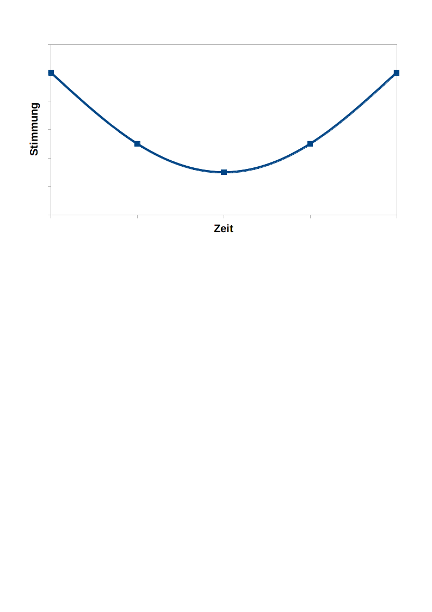
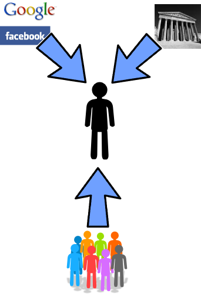
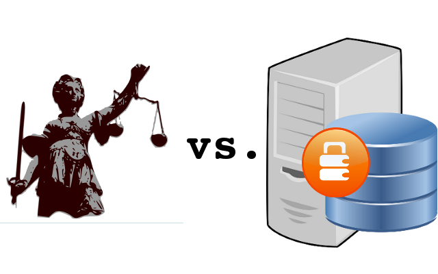
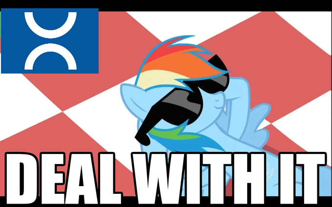
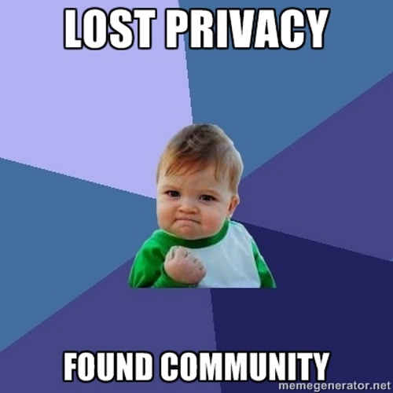
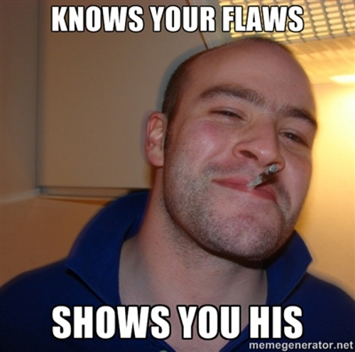
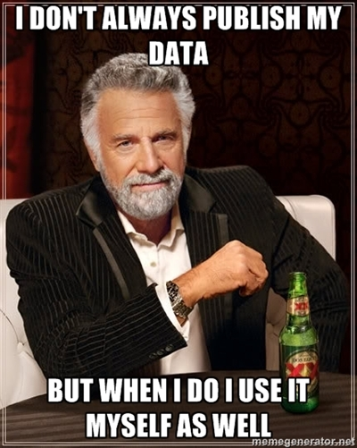
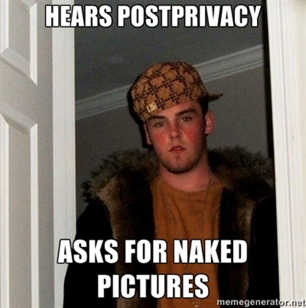
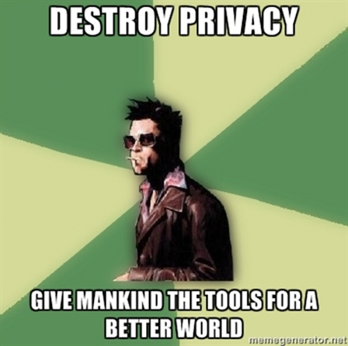

⇒ BRD: "Recht auf informationelle Selbstbestimmung"








Bei Fragen:
Folien unter http://the-gay-bar.com/talksvortrage/ oder https://github.com/tante/spackeriaslides
| Table of Contents | t |
|---|---|
| Exposé | ESC |
| Source Files | s |
| Slide Numbers | n |
| Notes | 2 |
| Help | h |